Julia Fukuyama
Reading: Cleveland pp. 228-241, 245-248, 257-266, 270
Today: Two new kinds of plots
Level plots
Contour plots
We’ll use them to plot
Data
Surfaces (e.g. output from a smoother)
Another theme that runs through the examples today: data is not collected at even intervals, and it helps to look in places where you have data.
We still have three continuous variables, two “explanatory” variables, \(u\) and \(v\), and one “response” variable, \(y\).
Before, we made coplots, with
\(y\) on the vertical axis,
\(u\) on the horizontal axis,
Facets defined by cuts of \(v\).
These are useful for finding interactions, and particularly useful when the interactions you find are simple.
A level plot is very similar in form to a coplot, but the purpose is to visualize the response variable given both predictors at once.
In a level plot, we put
\(u\) on the vertical axis,
\(v\) on the horizontal axis,
Define facets by cuts of \(y\).
This allows us to see which regions of the explanatory variables correspond to similar values of the response variable.
Velocities of the NGC 7531 galaxy.
The data frame galaxy contains 323 measurements of velocity for locations in galaxy NGC 7531.
Variables are:
east.west: Relative position on the east/west
axis.
north.south: Relative position on the north/south
axis.
velocity: Velocity of the galaxy in km/s.
We would like to model velocity as a function of
position.
Let’s start out just plotting the explanatory variables to see where we have measurements.
## Loading required package: viridisLite## east.west north.south angle radial.position
## Min. :-29.66693 Min. :-49.108 Min. : 12.50 Min. :-52.4000
## 1st Qu.: -7.91688 1st Qu.:-13.554 1st Qu.: 63.50 1st Qu.:-21.3500
## Median : -0.06493 Median : 0.671 Median : 92.50 Median : -0.8000
## Mean : -0.33237 Mean : 1.521 Mean : 80.89 Mean : -0.8427
## 3rd Qu.: 6.95053 3rd Qu.: 18.014 3rd Qu.:102.50 3rd Qu.: 19.6500
## Max. : 29.48414 Max. : 49.889 Max. :133.00 Max. : 55.7000
## velocity
## Min. :1409
## 1st Qu.:1523
## Median :1586
## Mean :1594
## 3rd Qu.:1669
## Max. :1775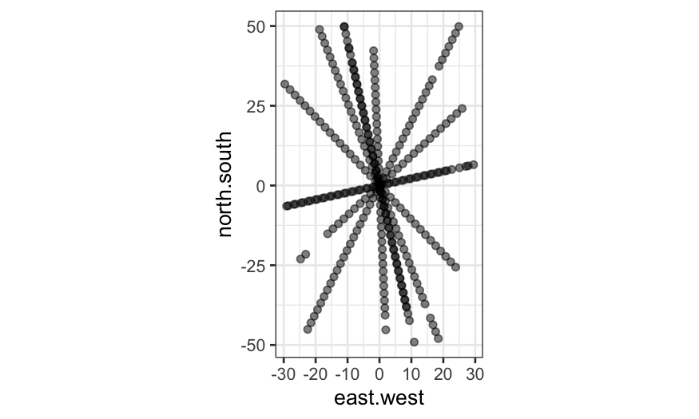
Next, let’s try a level plot of the data.
Remember that in a level plot, we plot the two explanatory variables on the horizontal and vertical axes, and we facet on intervals of the response variable.
## the cut_number command divides the range of a variable into
## intervals such that each interval has approximately the same
## number of observations
table(cut_number(galaxy$velocity, n = 10))##
## [1.41e+03,1.47e+03] (1.47e+03,1.5e+03] (1.5e+03,1.54e+03] (1.54e+03,1.57e+03]
## 33 32 33 31
## (1.57e+03,1.59e+03] (1.59e+03,1.61e+03] (1.61e+03,1.64e+03] (1.64e+03,1.69e+03]
## 35 30 32 32
## (1.69e+03,1.74e+03] (1.74e+03,1.78e+03]
## 33 32## we use cut_number to make the level plot/coplot:
ggplot(galaxy, aes(x = east.west, y = north.south, color = velocity * 10^(-3))) +
geom_jitter(width = 0.5, height = 0.5, size = .5) +
facet_wrap(~ cut_number(velocity * 10^(-3), n = 10), ncol = 5) +
coord_fixed() +
scale_color_viridis("Velocity, 10^3 km/s") +
labs(title = "Level plot of galaxy locations, faceted by velocity (expressed in 10^3 km/s)")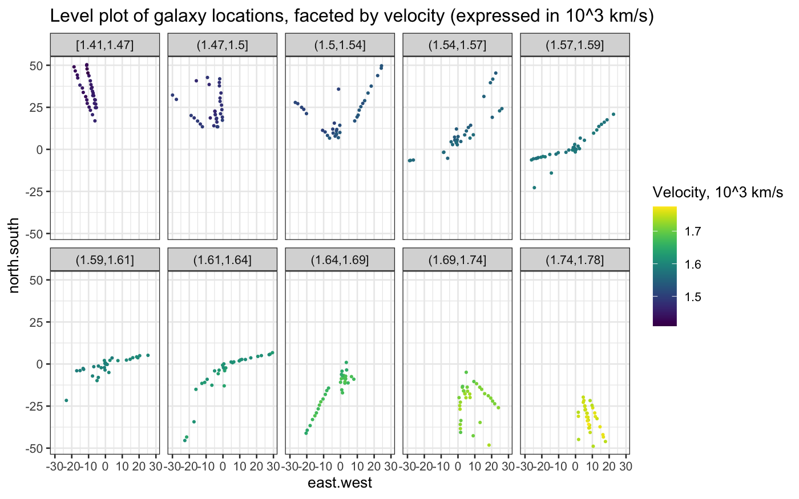
Compare the level plot with a plot in which velocity is indicated solely by color:
ggplot(galaxy, aes(x = east.west, y = north.south, color = velocity * 10^(-3))) +
geom_jitter(width = 0.5, height = 0.5, size = .5) +
coord_fixed() +
scale_color_viridis("Velocity, 10^3 km/s") +
labs(title = "Galaxy locations and velocity")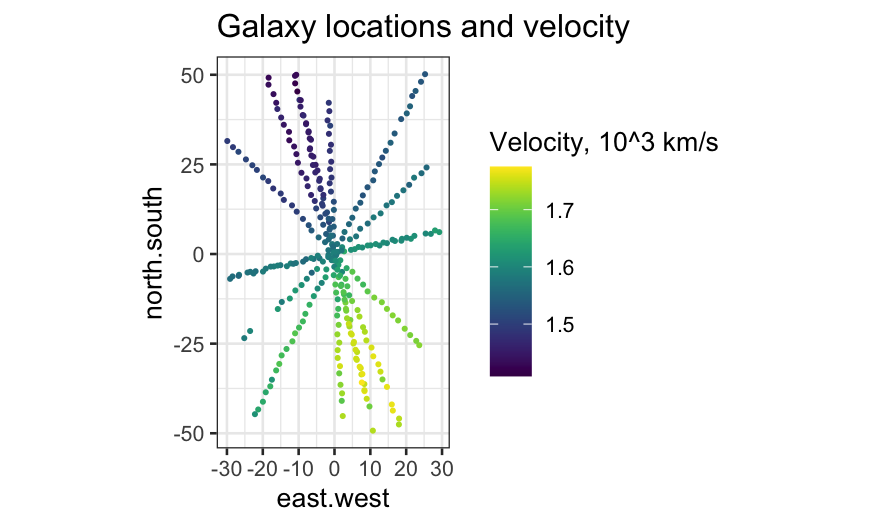
The galaxy dataset already has radial position and angle computed for us, but it’s a useful exercise to do it yourself as well.
galaxy %>%
mutate(theta = atan(north.south / east.west) / (2 * pi) * 360) %>%
mutate(rotation_to_horizontal = theta + 180 * (theta < 0)) %>%
mutate(radial_position_recomputed = sqrt(north.south^2 + east.west^2)) %>%
head## east.west north.south angle radial.position velocity theta
## 1 8.462789 -38.17317 102.5 39.1 1769 -77.5
## 2 7.964978 -35.92769 102.5 36.8 1749 -77.5
## 3 7.467167 -33.68221 102.5 34.5 1749 -77.5
## 4 6.969356 -31.43673 102.5 32.2 1758 -77.5
## 5 6.471544 -29.19125 102.5 29.9 1750 -77.5
## 6 5.973733 -26.94577 102.5 27.6 1745 -77.5
## rotation_to_horizontal radial_position_recomputed
## 1 102.5 39.1
## 2 102.5 36.8
## 3 102.5 34.5
## 4 102.5 32.2
## 5 102.5 29.9
## 6 102.5 27.6Once we have the angle and radial.position
variables, we can look at how velocity changes along each of the
trajectories.
ggplot(galaxy, aes(x = radial.position, y = velocity)) +
geom_point(,size = .5) +
stat_smooth(method = "loess") +
facet_wrap(~ angle, ncol = 4) +
labs(title = "Galaxy position and velocity split by slit angle")## `geom_smooth()` using formula 'y ~ x'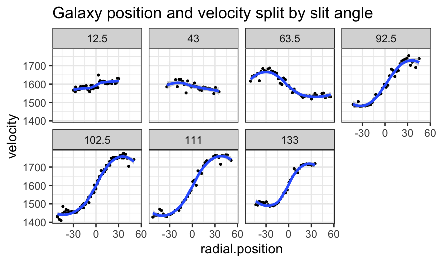
Since there’s nothing particularly special about the angles measured, and we expect that velocity is smooth not just along those trajectories but overall, we would prefer a 2d loess smooth.
galaxy_loess = loess(velocity ~ east.west * north.south,
data = galaxy, span = 0.25,
family = "symmetric", normalize = FALSE)Why normalize = FALSE?
Making the analogous coplot with loess fitted values, we see a similar but not identical smooth.
ggplot(augment(galaxy_loess, data = galaxy), aes(x = radial.position, y = velocity)) +
geom_point(size = .5) +
geom_line(aes(y = .fitted), color = "blue") +
facet_wrap(~ angle, ncol = 4) +
labs(title = "Galaxy position and velocity split by slit angle with fitted model")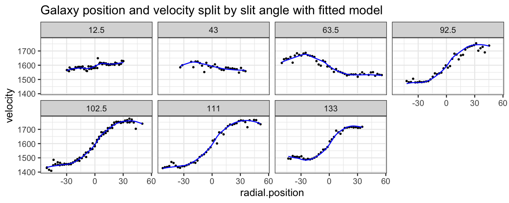
To make a level plot, we first need to get fitted values for the loess smoother at a grid of points:
Then we can make the level plot by cutting the response into bins:
ggplot(galaxy_smoothed, aes(x = east.west, y = north.south, fill = .fitted)) +
geom_raster() +
coord_fixed() +
facet_wrap(~ cut_number(.fitted * 10^-3, n = 20), ncol = 10) +
scale_fill_viridis("Fitted velocity")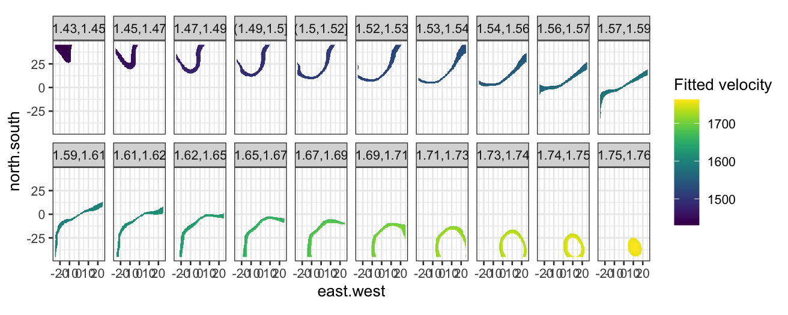
Again, compare the level plot with one where the fitted value is indicated only by color:
ggplot(galaxy_smoothed, aes(x = east.west, y = north.south, fill = .fitted)) +
geom_raster() +
coord_fixed() +
scale_fill_viridis("Fitted velocity")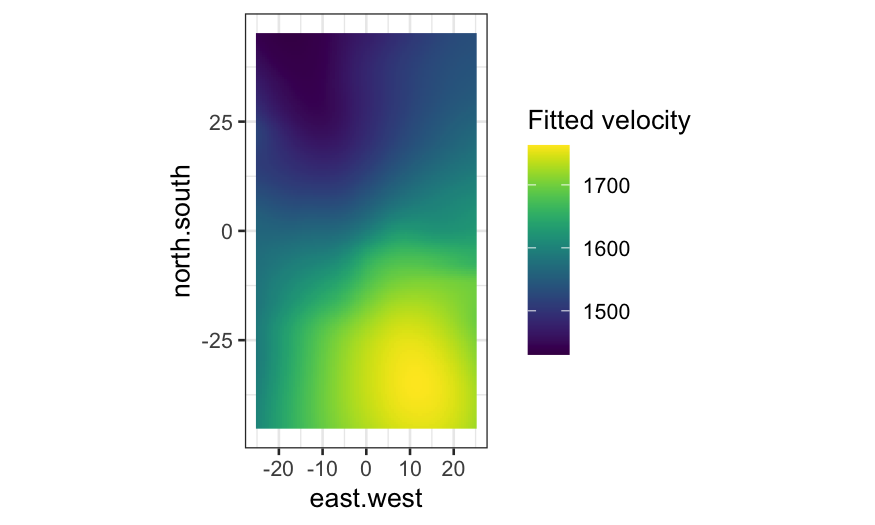
Definition: The \(a\) contour of a function \(f(x,y)\) is the set \(\{ (x, y) : f(x,y) = a \}\).
A contour plot of \(f(x,y)\) is a plot with \(x\) and \(y\) on the horizontal and vertical axes, and one or more contours of the function \(f(x,y)\).
Note: Finding the contours is an inverse problem, and for most functions we want contours of we won’t have anything available in closed form. In practice, contours are computed numerically.
An algorithm for finding the \(a\) contour of a function \(f\):
Evaluate \(f\) at a rectangular grid of points covering the region of study.
Consider all the grid segments (line segments connecting two neighboring grid points) for which one endpoint is at greater than or equal to \(a\) and the other endpoint is less than or equal to \(a\). Note that if the function \(f\) is continuous, the \(a\) contour must cross the grid segment.
Approximate the location where the \(a\) contour crosses the grid segment by interpolation, and save the point.
Draw contours by connecting the points (see pp. 242-244 for one way to do this).
Contour plot interpretation
Closely spaced contours indicate large slope.
Parallel, evenly-spaced contours indicate the surface is a plane.
ggplot(galaxy_smoothed, aes(x = east.west, y = north.south, fill = .fitted, z = .fitted)) +
geom_raster() +
geom_contour(bins = 20, color = "black") +
coord_fixed() +
scale_fill_viridis("Fitted velocity")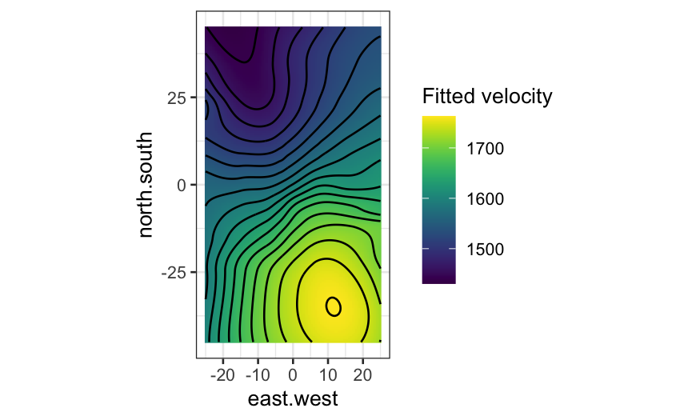
Again, compare with the plot with no contours and fitted value indicated only by color:
The soil dataset contains measurements of soil
resistivity. The variables are:
northing: The position along one axis (not actually
north-south).
easting: The position along the perpendicular axis
(also not east-west).
resistivity: The soil resistivity.
First let’s look at where we have measures of resistivity:
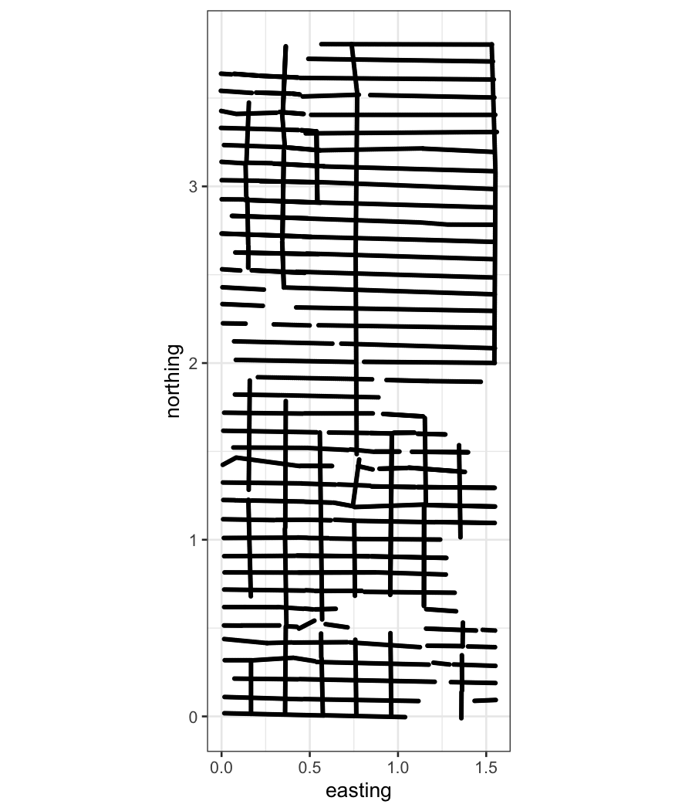
The plot above motivates the inclusion of the additional variables:
is.ns: Was the measurement taken from a northing
track?
track: The ID of a track.
We can look at these two variables in a little more detail to see how tracks are defined:
## track
## is.ns 1 2 3 4 5 6 7 8 9 10 11 12 13 14 15 16 17 18
## FALSE 113 142 157 166 156 128 107 166 184 230 139 190 166 226 193 202 134 128
## TRUE 273 462 267 355 256 175 119 181 0 0 0 0 0 0 0 0 0 0
## track
## is.ns 19 20 21 22 23 24 25 26 27 28 29 30 31 32 33 34 35 36
## FALSE 125 109 93 187 110 134 148 153 188 203 219 202 214 201 199 179 182 177
## TRUE 0 0 0 0 0 0 0 0 0 0 0 0 0 0 0 0 0 0
## track
## is.ns 37 38 39 40
## FALSE 180 203 118 102
## TRUE 0 0 0 0As with the galaxy data, we can look at resistivity along tracks:
ggplot(subset(soil, is.ns == TRUE), aes(x = northing, y = resistivity)) +
geom_point(size=.5) +
facet_wrap(~track, ncol = 4)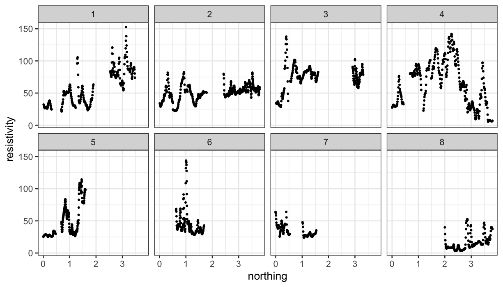
ggplot(subset(soil, is.ns == FALSE), aes(x = easting, y = resistivity)) +
geom_point(size = 0.5) +
facet_wrap(~track, ncol = 8)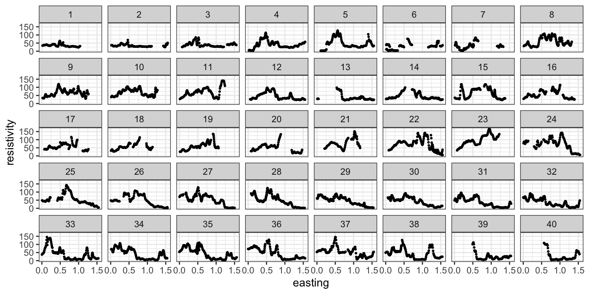
Because the variables are interchangeable, we would prefer a 2d loess fit:
Once we have the fit, we evaluate it on a grid and make level plots and contour plots:
soil_grid = data.frame(expand.grid(easting = seq(0, 1.5, 0.01),
northing = seq(0, 3.5, 0.01)))
soil_smoothed = augment(soil_lo, newdata = soil_grid)
ggplot(soil_smoothed,
aes(x = easting, y = northing, z = .fitted, fill = .fitted)) +
geom_raster() +
geom_contour(bins = 16, color = "black") +
scale_fill_viridis("Fitted resistivity") +
coord_fixed()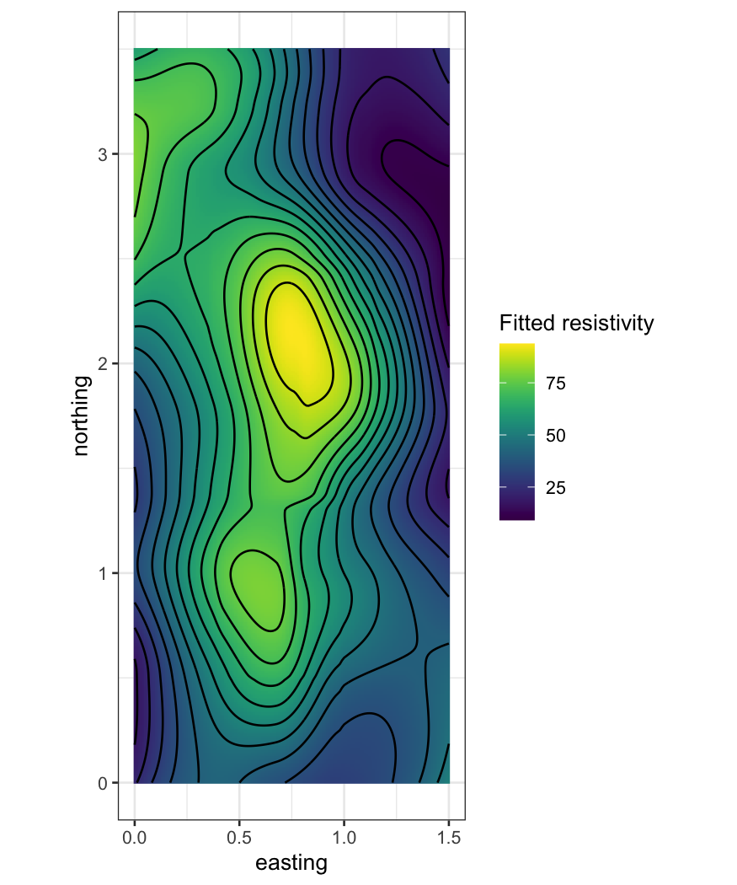